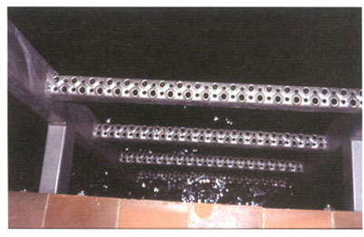

3 |
Beschaffenheit |
||||||||||
3.1 |
|
Werkstoffe |
|||||||||
| 3.1.1 |
Steiggänge müssen aus Werkstoffen hergestellt sein, die den jeweiligen Betriebsverhältnissen dauerhaft gerecht werden. Diese sind z. B. nicht-rostender bzw. ummantelter Stahl.
|
||||||||||
| 3.1.2 |
Bei der Auswahl der Werkstoffe für Steiggänge sind auch die Forderungen des Explosionsschutzes zu beachten. Siehe auch Betriebssicherheitsverordnung sowie § 11 Abs. 1 der Unfallverhütungsvorschrift "Abwassertechnische Anlagen" (GUV-V C5) und "Explosionsschutz-Regeln (EX-RL)" (GUV-R 104).
|
||||||||||
3.2 |
|
Ausführung |
|||||||||
| 3.2.1 |
Auftritte von Steiggängen müssen trittsicher sein und eine sichere Festhaltemöglichkeit bieten. Zur Trittsicherheit gehören neben der ausreichenden Festigkeit auch die ausreichende Auftrittstiefe sowie Rutschhemmung.
Auftritte sind unter Berücksichtigung der betrieblichen Verhältnisse rutschhemmend auszuführen.
 Bild 13: Lochsprossen |
||||||||||
| 3.2.2 | Die Fußfreiraumbreite (Auftrittsbreite), ausgenommen bei Steigeisen nach DIN EN 13 101, muss bei einläufigen Steiggängen mindestens 300 mm betragen; bei zweiläufigen Steiggängen muss sie mindestens 150 mm betragen.
|
||||||||||
| 3.2.3 | Die Auftritte von Steiggängen müssen als Sicherung gegen Abrutschen des Fußes beidseitig eine Seitenbegrenzung aufweisen.
|
||||||||||
| 3.2.4 |
Beim Einbau einzelner Auftritte von Steiggängen, z. B. Steigeisen, müssen folgende Abstände (Fußfreiraumtiefen) eingehalten werden:
Dabei darf die Fußfreiraumtiefe, gemessen am Auftrittschenkel (Außenseite), 120 mm nicht unterschreiten.
|
||||||||||
| 3.2.5 | Sind innerhalb eines Steigganges versetzte unterschiedliche Querschnitte vorhanden, sollten Steigleitern bevorzugt werden.
|
||||||||||
3.3 |
|
Bemessung und Festigkeit |
|||||||||
|
Auftritte von Steiggängen müssen eine ausreichende Festigkeit aufweisen.
Für Steigkästen ist in eingebautem Zustand eine an statisch ungünstigster Stelle lotrecht wirkende Einzellast von mindestens 1500 N zugrunde zu legen. |
|||||||||||